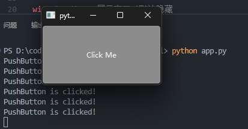
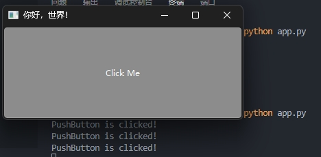
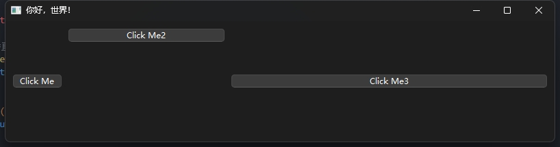
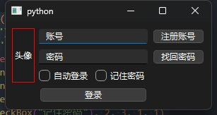
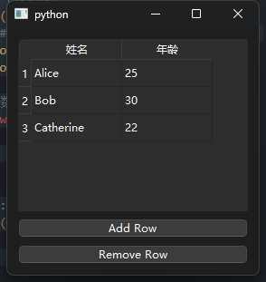
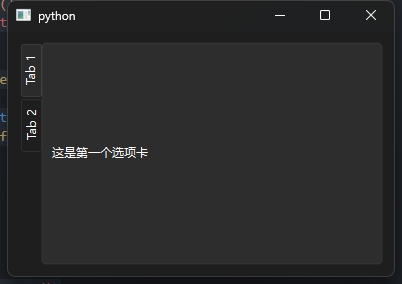

PySide6 小记
Qt 似乎读作/ˈkjuːt/。如果不用QML 的话，在适当调整导入包后，PySide6 打包出的文件体积并不大。个人在只用到了最基础的功能，本文仅作Cheatsheet 使用。
Demo
通过示例程序可以看一下PySide6 程序的代码结构：
import sys
from PySide6.QtWidgets import (
QApplication,
QPushButton,
QMainWindow)
# 创建应用消息，初始化消息队列
app = QApplication(sys.argv)
# 创建窗口，任何QtWidget 都可以作为窗口
win = QMainWindow()
# 创建一个按钮
btn = QPushButton("Click Me")
# 将CLick 信号连接到槽（lambda 函数）
btn.clicked.connect(lambda x: print("PushButton is clicked!"))
# 将按钮添加到窗口
win.setCentralWidget(btn)
win.show() # 展示窗口（默认隐藏
# 消息循环
app.exec()运行脚本结果如下：

面向对象
鉴于上面的代码不够优雅，于是可以采用面向对象的方法进行封装：
import sys
from PySide6.QtWidgets import (
QApplication,
QPushButton,
QMainWindow)
# 定义窗口类，代码可以拆分到其他文件
class MyWindow(QMainWindow):
def __init__(self,title:str) -> None:
super().__init__()
self.setWindowTitle(title)
# 创建按钮并绑定槽函数
self.btn_click_me = QPushButton("Click Me")
self.btn_click_me.clicked.connect(self.btn_clecked)
self.setCentralWidget(self.btn_click_me)
# 定义槽函数
def btn_clecked(self):
print("PushButton is clicked!")
# 创建应用消息，初始化消息队列
app = QApplication(sys.argv)
# 创建窗口
win = MyWindow("你好，世界！")
win.show() # 展示窗口（默认隐藏
# 消息循环
app.exec()运行脚本结果如下：

Layout 布局
QH(V)BoxLayout
以QHBoxLayout 横向布局为例，下面代码仅包含窗口布局的的实现：
from PySide6.QtCore import Qt
# 定义窗口类，代码可以拆分到其他文件
class MyWindow(QMainWindow):
def __init__(self,title:str) -> None:
super().__init__()
self.setWindowTitle(title)
# MainWindow 中不支持直接设置Layout
self._widget = QWidget()
self.setCentralWidget(self._widget)
# 添加横向
layout = QHBoxLayout()
# layout 还有addStretch 方法，在第一个元素之前和最后一个元素之后添加，可使元素居中。
# layout.addStretch() # 如果在每个元素间都添加，则效果类似于spacing-around
# layout 还可以设置margin，spacing 等信息
self._widget.setLayout(layout)
# 添加组件
layout.addWidget( QPushButton("Click Me") # 不随父窗口拉伸
layout.addWidget(QPushButton("Click Me2"), stretch=1, alignment=Qt.AlignmentFlag.AlignTop)
layout.addWidget(QPushButton("Click Me3"), stretch=2) # 随父窗口拉伸，整数是拉伸量占比
# 组件只要提前声明就好，何时使用影响不大效果如下：

QGridLayout
在界面比较复杂的情况下，优先选择栅格布局：
class MyWindow(QMainWindow):
def __init__(self, title: str) -> None:
super().__init__()
# MainWindow 中不支持直接设置Layout
self._widget = QWidget()
self.setCentralWidget(self._widget)
# 添加横向
layout = QGridLayout()
label = QLabel("头像")
label.setStyleSheet('border:1px solid red;')
layout.addWidget(label, 0, 0, 3, 2) # 0 行0 列，占3 行1 列
layout.addWidget(QLineEdit("账号"), 0, 2, 1, 2)
layout.addWidget(QLineEdit("密码"), 1, 2, 1, 2)
layout.addWidget(QCheckBox("自动登录"), 2, 2, 1, 1)
layout.addWidget(QCheckBox("记住密码"), 2, 3, 1, 1)
layout.addWidget(QPushButton("注册账号"), 0, 4, 1, 1)
layout.addWidget(QPushButton("找回密码"), 1, 4, 1, 1)
layout.addWidget(QPushButton("登录"), 3, 2, 1, 2)
# 设置列和行的扩展，不能有遗漏
layout.setColumnStretch(0, 0)
layout.setColumnStretch(1, 0)
layout.setColumnStretch(2, 0)
layout.setColumnStretch(3, 0)
layout.setColumnStretch(4, 1)
# 限制行高不生效
layout.setRowStretch(0, 0)
layout.setRowStretch(1, 0)
layout.setRowStretch(2, 0)
layout.setRowStretch(3, 1)
self._widget.setLayout(layout)效果如下：

数据绑定
可以通过QAbstractItemModel 结合视图进行数据的绑定，
import sys
from PySide6.QtCore import Qt, QAbstractTableModel, QModelIndex
from PySide6.QtWidgets import (
QApplication,
QPushButton,
QVBoxLayout,
QWidget,
QTableView)
class TableModel(QAbstractTableModel):
def __init__(self, data) -> None:
super().__init__()
self._data = data
self._headers = ["姓名", "年龄"]
def data(self, index, role):
if role == Qt.ItemDataRole.DisplayRole or role == Qt.ItemDataRole.EditRole:
# Qt.ItemDataRole 代表展示文本的方式
return self._data[index.row()][index.column()]
# 表头信息
def headerData(self, section, orientation, role):
# 索引，方向，角色
if role == Qt.ItemDataRole.DisplayRole:
if orientation == Qt.Orientation.Horizontal:
return self._headers[section]
else:
return section + 1
def rowCount(self, index):
return len(self._data)
def columnCount(self, index):
return len(self._data[0])
# 编辑单元格
def setData(self, index, value, role):
if role == Qt.ItemDataRole.EditRole:
self._data[index.row()][index.column()] = value
self.dataChanged.emit(
index, index, (Qt.ItemDataRole.DisplayRole, Qt.ItemDataRole.EditRole))
return True
return False
# 表示单元格可以选择，可以启用，可以编辑
def flags(self, index):
return Qt.ItemFlag.ItemIsSelectable | Qt.ItemFlag.ItemIsEnabled | Qt.ItemFlag.ItemIsEditable
# 添加行
def addRow(self, row_data):
print(QModelIndex().row())
# 通知视图即将插入新的（几）行
self.beginInsertRows(
QModelIndex(), # 父项索引，平坦模型传默认QModelIndex()
self.rowCount(QModelIndex()), # 新行开始的位置
self.rowCount(QModelIndex()) # 新行结束的位置
)
# 添加数据，最终显示的数据顺序由该行决定
self._data.append(row_data)
# 完成添加
self.endInsertRows()
# 删除行
def removeRow(self, row):
self.beginRemoveRows(QModelIndex(), row, row)
self._data.pop(row)
self.endRemoveRows()
class MainWindow(QWidget):
def __init__(self):
super().__init__()
self.layout = QVBoxLayout()
self.table = QTableView()
data = [
["Alice", 25],
["Bob", 30],
["Catherine", 22],
]
self.model = TableModel(data)
self.table.setModel(self.model)
self.layout.addWidget(self.table)
self.add_button = QPushButton("Add Row")
self.add_button.clicked.connect(self.add_row)
self.layout.addWidget(self.add_button)
self.remove_button = QPushButton("Remove Row")
self.remove_button.clicked.connect(self.remove_row)
self.layout.addWidget(self.remove_button)
self.setLayout(self.layout)
def add_row(self):
self.model.addRow(["New Name", 0])
def remove_row(self):
indices = self.table.selectionModel().selectedRows()
for index in sorted(indices):
self.model.removeRow(index.row())
app = QApplication(sys.argv)
window = MainWindow()
window.show()
sys.exit(app.exec())效果如下：

组件
TabWidget
可以把TabWidget 看作是一个widgets 的集合，根据插入的顺序和标题自动生成标签和内容：
from PySide6.QtWidgets import QApplication, QWidget, QVBoxLayout, QTabWidget, QLabel, QPushButton
class MainWindow(QWidget):
def __init__(self):
super().__init__()
layout = QVBoxLayout()
self.setLayout(layout)
# 创建QTabWidget
self.tabs = QTabWidget()
# Tab 的方向
self.tabs.setTabPosition(QTabWidget.TabPosition.West)
layout.addWidget(self.tabs)
# 创建选项卡内容
self.create_tabs()
def create_tabs(self):
# 第一个选项卡
tab1 = QWidget()
tab1_layout = QVBoxLayout()
tab1_label = QLabel("这是第一个选项卡")
tab1_layout.addWidget(tab1_label)
tab1.setLayout(tab1_layout)
self.tabs.addTab(tab1, "Tab 1")
# 第二个选项卡
tab3 = QWidget()
tab3_layout = QVBoxLayout()
tab3_label = QLabel("这是第二个选项卡")
tab3_button = QPushButton("点击我")
tab3_button.clicked.connect(self.on_button_click)
tab3_layout.addWidget(tab3_label)
tab3_layout.addWidget(tab3_button)
tab3.setLayout(tab3_layout)
self.tabs.addTab(tab3, "Tab 2")
def on_button_click(self):
print("按钮被点击了")效果如下：

Nuitka 打包
下面是必选参数，最简单的配置：
nuitka app.py
--standalone # 禁用控制台
--onefile # 打包成一个文件
--enable-plugin=pyside6 # 启用PySide6 支持
--disable-console # 禁用控制台
--windows-icon-from-ico=ICON_PATH # 图标
--onefile-windows-splash-screen-image=SPLASH_SCREEN_IMAGE # 首屏画面
--windows-uac-admin # uac
--windows-uac-uiaccess # 远程桌面会用到
## 其他信息
--company-name=COMPANY_NAME # 公司名
--product-name=PRODUCT_NAME # 产品名，默认是程序名
--file-version=FILE_VERSION # 文件版本
--product-version=PRODUCT_VERSION # 产品版本
--file-description=FILE_DESCRIPTION # 描述信息
--copyright=COPYRIGHT_TEXT # 版权信息
--trademarks=TRADEMARK_TEXT # 商标
Nuitka 插件
> nuitka --plugin-list
The following plugins are available in Nuitka
--------------------------------------------------------------------------------
pyside6 启用PySide6 支持
upx 通过UPX 压缩二进制文件，非必须，且需要指定upx.exe 的路径参考链接
fengMisaka 大佬的教程很全。